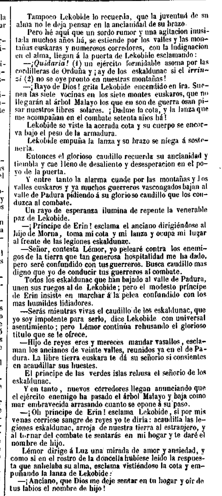
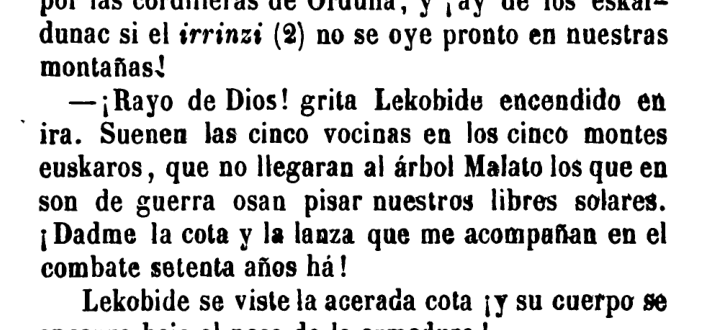
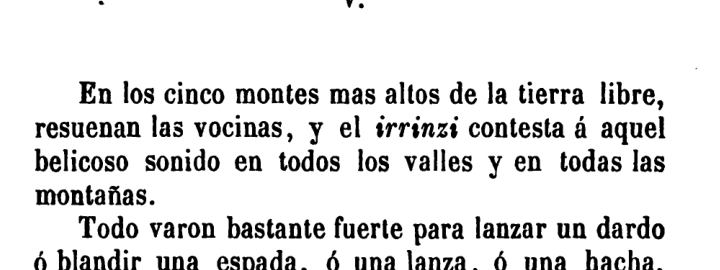
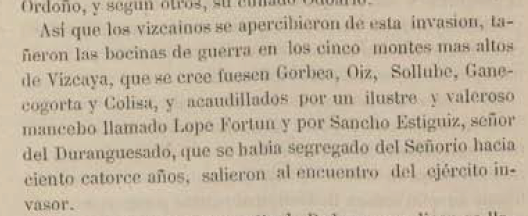
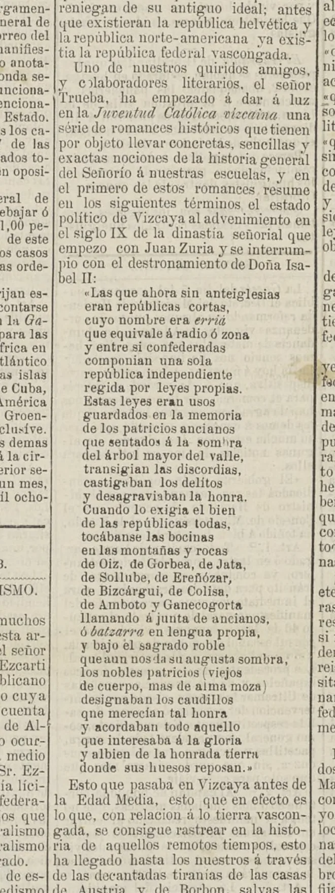

{kind=link}
{kind=link}
{kind=link}
{kind=link}
{kind=link}
{kind=link}
1858 · verificado
El Mundo Pintoresco confirma “siete vocinas” y “siete montes euskaros”. Es tradición montañera flexible, no lista canónica.
Trueba 1862 verificado
Informe técnico visual para fijar la secuencia de Antonio de Trueba: de la fase flexible de siete montes, a las cinco vocinas genéricas de 1862, y finalmente a la lista canónica con nombres en 1872.
1862 ya está verificado por facsímil: Cuentos populares confirma “cinco vocinas” en “cinco montes euskaros”. Pero todavía no nombra Gorbea, Oiz, Sollube, Ganecogorta ni Colisa/Kolitza; por eso 1872 sigue siendo la primera lista canónica completa localizada con nombres.
Prueba verificada
El facsímil de El Mundo Pintoresco, nº 17, 1 de agosto de 1858, confirma que Trueba ya unía bocinas y montes dentro del relato legendario de Jaun-Zuria. La fórmula es flexible: siete, no cinco nombres canónicos.

Prueba nueva V2.5
Cuentos populares, segunda edición, Madrid, Imprenta de D. Luis Palacios, 1862, contiene en el cuento “Jaun-Zuría” dos pasajes decisivos. La obra confirma que Trueba ya había pasado de la fórmula de siete montes de 1858 a una formulación de cinco vocinas/cinco montes genéricos.


Prueba fuerte
El recorte local muestra la fórmula prudente: “que se cree fuesen Gorbea, Oiz, Sollube, Ganecogorta y Colisa”.

Variante flexible
La lista ampliada demuestra que el motivo no estaba fijado siempre en cinco nombres: circulaba como tradición literaria flexible.

El Mundo Pintoresco confirma “siete vocinas” y “siete montes euskaros”. Es tradición montañera flexible, no lista canónica.
Cuentos populares confirma “cinco vocinas” en “cinco montes euskaros”, pero sin nombres de cumbres.
La lista canónica aparece en recorte local con Gorbea, Oiz, Sollube, Ganecogorta y Colisa/Kolitza.
La lista ampliada de nueve montañas/rocas está confirmada por recorte local.